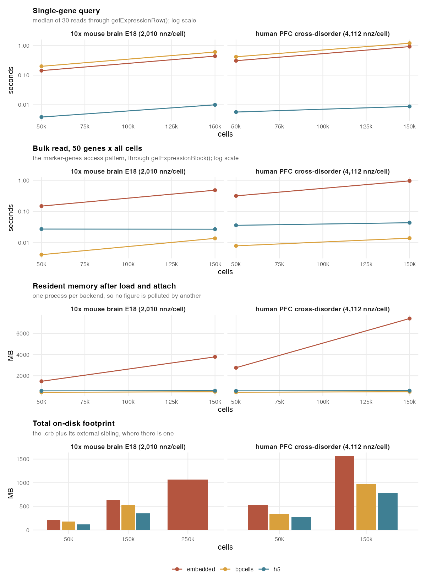
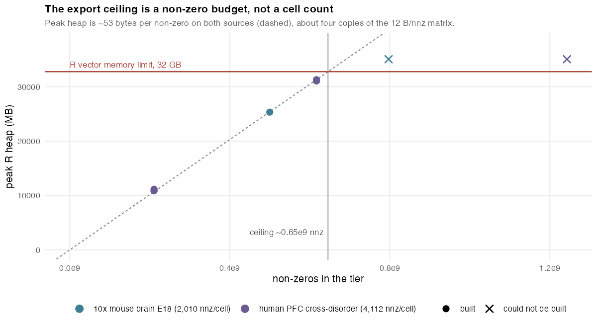

exportFromSeurat() and
convertSeuratToCerebro() can persist the expression matrix
three different ways through expression_matrix_mode:
"embedded" (the default) keeps the matrix inside the
.crb;"bpcells" writes a BPCells matrix directory next to it,
<stem>.bpcells/;"h5" writes a sparse HDF5 file next to it,
<stem>.h5.The same data set therefore turns into very different on-disk footprints, start-up costs, memory profiles and query latencies. The harness is designed to measure all three on two real public data sets in the 1.3-1.5 million cell range, walk the cell count up until the export stops working, and record where the limit is and why.
Evidence status. This draft is included so the harness, analysis, and presentation can be reviewed together. No complete
publicationrun has been performed on the current branch. Numerical results below come from the retained 2026-07-30 pilot, which predates the repeated-process protocol and is exploratory rather than release evidence. Final conclusions and figures must be regenerated from a validated publication run.
embedded |
bpcells |
h5 |
|
|---|---|---|---|
| Where the matrix lives | inside the .crb, serialised by
saveRDS |
sibling <stem>.bpcells/ directory |
sibling <stem>.h5 file (10x TENx layout) |
What the .crb holds |
metadata, projections, trees, and the matrix | metadata plus a lightweight handle | metadata plus a backend tag |
| Attach behaviour | nothing to do, the matrix is already in memory | open_matrix_dir() opens file handles, reads
nothing |
opens a lazy TENxMatrix seed, reads nothing |
| Runtime access | direct dgCMatrix indexing in RAM |
streams bit-packed chunks from disk | streams TENx columns through the HDF5Array page
cache |
| Extra package | none | BPCells |
HDF5Array |
| Portability | one self-contained file | .crb and .bpcells/ must travel
together |
.crb and .h5 must travel together; the
.h5 is readable by any TENx-compatible tool |
Both sources are public HDF5 files served over HTTPS with byte-range support. Neither is redistributable inside the package and neither needs to be: the harness reads cell blocks straight out of the remote file, so a run transfers only the cells it measures and stores nothing permanently.
| source | cells | genes | non-zeros | nnz/cell | remote size |
|---|---|---|---|---|---|
| 10x Genomics mouse brain, E18 | 1,306,127 | 27,998 | 2.625e9 | 2,010 | 3.93 GB |
| Human prefrontal cortex, cross-disorder atlas (HBCC cohort) | 1,486,324 | 34,176 | 6.112e9 | 4,112 | 14.15 GB |
The two differ in density by roughly a factor of two, which turns out to matter more than the cell count does.
Before any benchmark runs, one number rules out the obvious approach.
A dgCMatrix addresses its non-zeros with 32-bit
i and p slots, so no sparse matrix in R can
hold more than .Machine$integer.max = 2,147,483,647
non-zeros. The mouse fixture has 2.625e9 and the human one 6.112e9.
Neither data set can be represented in memory at full size on any machine, regardless of how much RAM it has. That is a property of the container, not of the hardware, and it is the reason the tiers below stop where they do.
Each (source, tier, backend) combination runs in its own
R process, so a resident-set figure describes one backend only and a
tier that exhausts memory cannot corrupt the others’ numbers.
| metric | what it captures |
|---|---|
crb_mb, sibling_mb |
size of the .crb and of its external sibling |
export_secs |
wall clock inside exportFromSeurat() |
load_secs |
readRDS() of the .crb |
attach_secs |
resolving the external backend at load time |
rss_mb |
resident set size after load plus attach |
cold_secs |
first single-gene read after attach |
hot_p50_secs, hot_p95_secs |
30 single-gene reads rotating over a 50-gene pool |
bulk_secs |
a densified 50-gene x all-cells block, the marker-genes pattern |
Reads go through getExpressionRow() and
getExpressionBlock(), and the attach goes through the same
helper the Shiny server calls, so the numbers describe the runtime path
rather than raw matrix indexing. The gene pool is filtered to genes that
actually carry counts, because a query for an all-zero row would let a
lazy backend skip work a real query cannot skip.
Grouping variables and the 2-D embedding are synthetic. A real clustering and UMAP would add tens of minutes per tier without changing anything being measured; the counts, dimensions and sparsity are all real.

embedded backend alone, used to
bracket the ceiling in the next section.h5 by two orders of magnitude| source | cells | backend | load s | attach s | RSS MB | hot p50 s | bulk s |
|---|---|---|---|---|---|---|---|
| mouse | 50,000 | embedded | 2.21 | 0.01 | 1,476 | 0.1426 | 0.149 |
| mouse | 50,000 | bpcells | 0.05 | 1.28 | 432 | 0.1994 | 0.004 |
| mouse | 50,000 | h5 | 0.03 | 2.12 | 569 | 0.0038 | 0.027 |
| mouse | 150,000 | embedded | 6.68 | 0.01 | 3,784 | 0.4409 | 0.480 |
| mouse | 150,000 | bpcells | 0.15 | 1.32 | 487 | 0.6073 | 0.014 |
| mouse | 150,000 | h5 | 0.09 | 2.08 | 585 | 0.0099 | 0.027 |
| human | 50,000 | embedded | 4.73 | 0.02 | 2,759 | 0.3087 | 0.316 |
| human | 50,000 | bpcells | 0.05 | 1.26 | 437 | 0.4189 | 0.008 |
| human | 50,000 | h5 | 0.03 | 2.23 | 571 | 0.0057 | 0.036 |
| human | 150,000 | embedded | 13.37 | 0.01 | 7,410 | 0.9250 | 0.955 |
| human | 150,000 | bpcells | 0.15 | 1.29 | 491 | 1.2026 | 0.014 |
| human | 150,000 | h5 | 0.09 | 2.10 | 585 | 0.0088 | 0.044 |
At 150,000 human cells a single-gene read costs 0.0088 s on
h5 against 0.925 s on embedded –
105x – and 1.203 s on bpcells. On the
mouse fixture the gap is 45x. h5 also keeps its resident
set flat: 569-585 MB across every tier of both sources, while
embedded climbs to 7,410 MB and its readRDS
alone takes 13.4 s.
embedded’s per-gene cost tracks the total non-zero count
rather than the cell count, which is consistent with a row extraction
having to scan the whole i array – at 150,000 mouse cells
that array holds 3.0e8 elements, about 1.2 GB walked per query.
embedded is the slowest backend for a
50-gene block: 0.955 s against 0.014 s for bpcells, a
factor of 68. This is not a paradox. The matrix is stored genes x cells
in compressed-sparse-column form, and a bulk read pulls whole rows – the
pathological direction for that layout. It is also the pattern the
marker-genes view uses.
bpcells is the mirror image: fastest bulk read of the
three, slowest per-gene read of the three, losing even to
embedded. It is optimised for block access, and single-gene
lookup is its worst case.
| source | cells | backend | .crb MB | sibling MB | total MB | export s |
|---|---|---|---|---|---|---|
| mouse | 50,000 | embedded | 210.0 | – | 210.0 | 43.4 |
| mouse | 50,000 | bpcells | 1.8 | 174.8 | 176.6 | 3.1 |
| mouse | 50,000 | h5 | 1.5 | 115.8 | 117.3 | 37.7 |
| mouse | 150,000 | embedded | 637.4 | – | 637.4 | 137.0 |
| mouse | 150,000 | bpcells | 4.9 | 530.2 | 535.2 | 8.2 |
| mouse | 150,000 | h5 | 4.5 | 345.8 | 350.3 | 169.8 |
| human | 50,000 | embedded | 528.2 | – | 528.2 | 111.2 |
| human | 50,000 | bpcells | 1.8 | 332.9 | 334.7 | 4.9 |
| human | 50,000 | h5 | 1.6 | 267.4 | 268.9 | 93.1 |
| human | 150,000 | embedded | 1,562.1 | – | 1,562.1 | 337.0 |
| human | 150,000 | bpcells | 5.1 | 972.7 | 977.9 | 20.2 |
| human | 150,000 | h5 | 4.6 | 784.0 | 788.7 | 419.6 |
h5 is the smallest on disk at every tier and
bpcells is by far the fastest to write – 20.2 s where
h5 needs 419.6 s for the same data. If you export
repeatedly during development that difference dominates your day; if you
export once and serve the result for months, it is noise.
Both external backends keep the .crb itself tiny (1.5-5
MB), because it then carries only metadata, projections and trees plus a
pointer to the sibling.

Every tier that failed did so in the same place – constructing the
Seurat object that exportFromSeurat() takes as input – and
therefore failed identically for all three backends.
Dividing peak heap by non-zero count gives the same constant on both
sources:
| tier | non-zeros | peak R heap | bytes/nnz |
|---|---|---|---|
| human PFC, 50k cells | 2.107e8 | 10,881 MB | 54.1 |
| human PFC, 150k cells | 6.166e8 | 31,072 MB | 50.4 |
| mouse brain, 250k cells | 4.998e8 | 25,325 MB | 53.1 |
So the export path costs roughly 53 bytes per non-zero at
peak, about four copies of the 12 bytes per non-zero that a
dgCMatrix needs. On a host whose R vector budget is 32 GB
that caps a data set at about 6.5e8 non-zeros – around
320,000 cells for the mouse fixture, but only around 157,000 for the
denser human one. Every observed boundary agrees:
Two consequences worth stating plainly.
The limit is a non-zero budget, not a cell count. Quoting a maximum number of cells is misleading, because a data set twice as dense hits the wall at half the cells. Multiply cells by non-zeros per cell and compare against your vector budget.
Switching backend does not raise it.
bpcells and h5 stream happily at runtime, but
the export requires an in-memory Seurat object first, so the
dgCMatrix capacity binds all three. Raising the ceiling
requires a streaming export path that never materialises the whole
matrix – and for the full sources it is not optional, since
2.625e9 and 6.112e9 non-zeros are unrepresentable at any RAM size.
The failures were also well-behaved: they are R’s own
mem.maxVSize() vector limit, raised as ordinary conditions,
so nothing was killed by the operating system and no run destabilised
the host.
h5 – the right default beyond a small
data set. Smallest on disk, fastest per-gene queries by two orders of
magnitude, and a resident set that does not grow with the data. Costs
the slowest export and a ~2 s attach.bpcells – pick it when you export
often, when bulk/blockwise access dominates, or when memory is the
binding constraint. Accept that per-gene queries are the slowest of the
three.embedded – small data sets and
single-file portability. It has the fastest attach (there is nothing to
attach) and needs no extra package, but memory grows with the matrix,
readRDS grows with it too, and its bulk reads are the
slowest of the three.The harness lives in tests/bench/ and is excluded from
the package build. It needs rhdf5 with its ROS3 driver,
plus BPCells and HDF5Array for the two
external backends.
tests/bench/run_sweep.sh # both sources, default tiers
Rscript tests/bench/src/01_inspect_data.R out.csv # dimensions only, no bulk transferThe sweep writes result CSVs and a summary table under
tests/bench/result/, and
tests/bench/src/41_draw_figures.R regenerates the figures
in this article from those CSVs, so the numbers here and the numbers in
the figures cannot drift apart. Source files are fetched into a scratch
directory that is removed when the run exits, including on interrupt; a
full run leaves nothing behind but the result files.
01_inspect_data.R is worth running on its own: it
reports the dimensions and non-zero count of each source for a few HTTP
range requests and no bulk transfer, which is enough to predict whether
a tier will fit before spending an hour on it.
Numbers were collected on one host – macOS 27 on arm64, 32 GB RAM, R 4.6.1 – and the ceiling in particular is a function of that machine’s R vector budget. The per-non-zero constant should carry across hosts; the cell counts derived from it will not.
Cell blocks are taken as several evenly spaced contiguous runs rather than a random sample, because a contiguous run is what makes the read a single hyperslab. Cells in both files are ordered by donor, so a tier is a handful of donors rather than a cross-section of the study. That is immaterial for measuring storage and access cost, and it would matter a great deal for any biological reading of these subsets, which is not what they are for.
Peak-heap figures are missing for the two smallest mouse tiers; they
were collected before a defect in the collection was fixed, and are
shown as -- rather than replaced with a guess.
One loose end: getExpressionRow() passes the full
character vector of cell names into the matrix subscript even when every
cell is wanted. Removing that accounts for about 1.8x of the
embedded per-gene cost in isolation, and transposing the
storage orientation bought only 2-3x at small scale – neither explains
the 105x gap, so the dominant cost is still attributed to the row scan
described above rather than to anything confirmed as fixable.